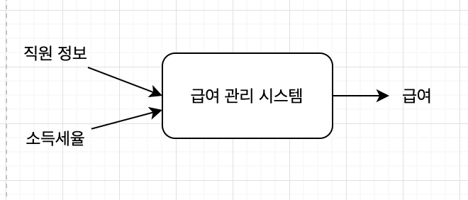
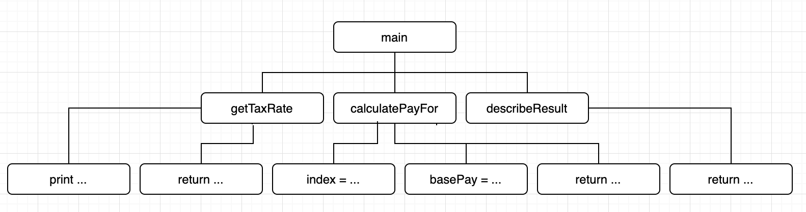
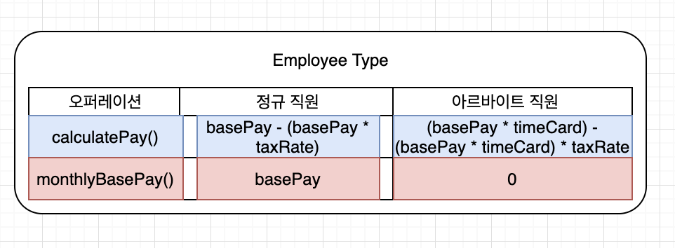
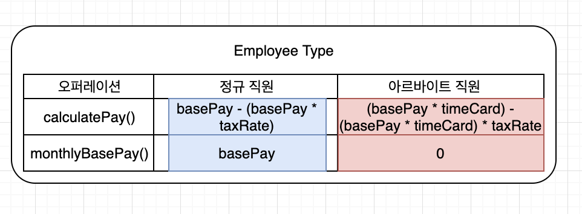

“OBJECTS 7장”
- 인지과부하 : 문제 해결에 필요한 요소의 수가 단기 기억 용량을 초과하여 문제 해결 능력이 급격하게 떨어지는 상황
- 추상화 : 불필요한 정보를 제거하고 현재의 문제 해결에 필요한 핵심만 남기는 작업
- 분해 : 큰 문제를 해결 가능한 작은 문제로 나누는 작업
프로시저 추상화와 데이터 추상화
메인 함수로서의 시스템
- 기능 분해
- 알고리즘 분해
- 시스템을 프로시저 단위로 분해
- 하향식 접근법(Top-Down Approach)
급여 관리 시스템
1 | 직원의 급여를 계산한다. |
- 급여 관리 시스템을 입력받아 출력을 생성하는 커다란 하나의 메인함수로 간주하고 기능 분해를 시작

- 기능을 줌심으로 필요한 데이터를 결정
급여 관리 시스템 구현

- 하향식 기능 분해 방식으로 설계한 시스템은 메인함수를 루트로 하는 트리로 표현
- 트리에서 각 노드는 시스템을 구성하는 하나의 프로시저
- 한 노드의 자식 노드는 부모 노드를 구현하는 절차중의 한 단계를 의미
하향식 기능 분해의 문제점
시스템은 하나의 메인 함수로 구성돼 있지 않다.
기능 추가나 요구사항 변경으로 인해 메인 함수를 빈번하게 수정해야 한다.
비즈니스 로직이 사용자 인터페이스와 강하게 결합된다.
하향식 분해는 너무 이른 시기에 함수들의 실행 순서를 고정시키기 때문에 유연성과 재사용성이 저하된다.
데이터 형식이 변경될 경우 파급효과를 예측할 수 없다.
- 설계는 코드 배치 방법이며 설계가 필요한 이유는 변경에 대비하기 위한 것
- 하향식 접근법과 기능 분해가 가지는 근본적인 문제점은 변경에 취약한 설계를 낳는 다는 것
하나의 메인 함수라는 비현실적인 아이디어
- 대부분의 시스템에서는 하나의 메인기능이란 개념은 존재하지 않음
- 하향식 접근법은 하나의 알고리즘을 구현하거나 배치 처리르 구현하기에는 적합
- 현대적인 상호작용 시스템을 개발하는데 적합하지 않음
실제 시스템에 정상(top)이란 존재하지 않는다.
메인 함수의 빈번한 재설계
- 기존 코드를 수정하는 것은 항상 새로운 버그를 만들어 낼 확률을 높임
- 시스템은 여러 개의 정상으로 구성되기 때문에 새로운 정상을 추가할 때마다 하나의 정상인 main 함수의 내부 구현을 수정해야함
- 기존 코드의 빈번한 수정으로 인한 버그 발생 확률이 높아짐
- 시스템은 변경에 취약해짐
비즈니스 로직과 사용자 인터페이스의 결합
- 비즈니스 로직을 설계하는 초기 단계부터 입력방법과 출력 양식을 함께 고민하도록 강요
- 코드 안에서 비즈니스 로직과 사용자 인터페이스 로직이 밀접하게 결합
- 하향식 접근법은 근본적으로 변경에 불안정한 아키텍처를 낳음
성급하게 결정된 실행 순서
- 설계를 시작하는 시점부터 시스템이 무엇을 해야 하는지가 아니라 어떻게 동작하는지 집중하도록 만듬
- 함수들의 실행 순서를 정의하는 시간 제약을 강조
- 기능 분해 방식은 중앙집중 제어 스타일 형태
- 함수의 제어구조가 빈번한 변경의 대상
- 기능을 추가하거나 변경하는 작업은 매번 기존에 결정된 함수의 제어구조를 변경
- 이를 해결할 수 있는 방법중 하나는 논리적 제약을 설계의 기준으로 삼는 것
- 하향식 접근법을 통해 분해한 함수들은 재사용 어렵
- 상위 함수가 강요하는 문맥 안에서만 의미를 가짐
하향식 설계와 관련된 모든 문제의 원인은 결합도다.
- 전체 시스템의 핵심적인 구조를 결정하는 함수들이 데이터와 강하게 결합된다는 것
데이터 변경으로 인한 파급 효과
하향식 기능 분해의 가장 큰 문제는 어떤 데이터를 어떤 함수가 사용하고 있는지를 추적하기 어렵다는 것
어떤 데이터가 어떤 함수에 의존하고 있는지를 파악하는 것은 어려운 일
- 모든 함수를 열어 데이터을 사용하고 있는지를 모두 확인해야 함
- 데이터 변경으로 인해 발생하는 함수에 대한 영향도를 파악하는 것이 생각보다 쉽지 않다는 것
데이터 변경으로 인한 영향을 최소화 하려면 데이터와 함께 변경되는 부분과 그렇지 않은 부분을 명확하게 분리해야 한다.
- 영향 받는 부분과 받지 않는 부분을 명확하게 분리
- 잘 정의된 퍼블릭 인터페이스를 통해 변경되는 부분에 대한 접근을 통제
- 정보은닉
- 모듈
언제 하향식 분해가 유용한가?
- 하향식 분해는 작은 프로그램과 개별 알고리즘을 위해서는 유용한 패러다임
- 이미 해결된 알고리즘을 문서화하고 서술하는 데 훌륭한 기법
- 실제로 동작하는 커다란 소프트웨어를 설계하는 데 적합한 방법은 아님
- 하향식 분해 방식으로 설계된 소프트 웨어
- 사용자 인터페이스 같은 비본질적인 측면에 집중
- 하나의 함수에 제어가 집중되므로 확장이 어려움
- 데이터에 대한 영향도를 파악하기 어렵게 만듬
- 근분적으로 재사용이 어려움
모듈
정보 은닉과 모듈
- 기능을 기반으로 시스템을 분해하는 것이 아니라 변경의 방향에 맞춰 시스템을 분해해야 함
- 정보은닉
- 시스템에서 자주 변경되는 부분을 상대적으로 덜 변경되는 안정적인 인터페이스 뒤로 감춰야 함
- 외부에 감춰야 하는 비밀에 따라 시스템을 분할하는 모듈 분할 원리
- 모듈과 기능 분해는 상호배타적인 관계가 아님
- 기능 분해
- 하나의 기능을 구현하기 위해 필요한 기능들을 순차적으로 찾아가는 탐색의 과정
- 모듈 분해
- 감춰야 하는 비밀을 선택하고 비밀 주변에 안정적인 보호막을 설치하는 보존의 과정
- 시스템의 가장 일반적인 비밀 :
데이터
모듈의 장점과 한계
모듈 내부의 변수가 변경되더라도 모듈 내부에만 영향을 미친다.
비즈니스 로직과 사용자 인터페이스에 대한 관심사를 분리한다.
전역 변수와 전역 함수를 제거함으로써 네임스페이스 오염을 방지한다.
- 모듈은
- 기능이 아니라 변경 정도에 따라 시스템을 분해하게 함
- 모듈 내부의 높은 응집도 유지
- 퍼블릭 인터페이스를 통해서만 통신
- 낮은 결합도 유지
- 데이터를 중심으로 시스템을 분해하는 것
- 데이터와 함수가 통합된 한 차원 높은 추상화를 제공하는 설계 단위
- 가장 큰 단점은 인스턴스의 개념을 제공하지 않음
- 이를 만족시키기 위해 등장한 개념이
추상 데이터 타입
데이터 추상화와 추상 데이터 타입
추상 데이터 타입
- 타입 : 변수에 저장할 수 있는 내용물의 종류와 변수에 적용될 수 있는 연산 가짓수를 의미
- 데이터 추상화
- 오퍼레이션 클러스터
클래스
클래스는 추상 데이터 타입인가?
- 추상 데이터 타입 != 클래스
- 추상 데이터 타입을
객체 기반 프로그래밍이라고 부름 - 추상 데이터 타입은 타입을 추상화
- 클래스는 절차를 추상화

- 타입 추상화 : 하나의 대표적인 타입이 다수의 세부적인 타입을 감추고 있음
- 하나의 타입처럼 보이는 Employee 내부 정규 직원과 아르바이트 직원이라는 두개의 타입이 공존
- 하나의 물리적 타입 안에 전체 타입 감춤
- 오퍼레이션 기준으로 타입을 묶음

- 객체지향 : 타입을 기준으로 오퍼레이션을 묶음
- 다형성
- 절차 추상화
추상 데이터 타입에서 클래스로 변경하기
변경을 기준으로 선택하라
- 클래스가 추상 데이터 타입의 개념을 따르는지 확인 할 수 있는 가장 간단한 방법
- 클래스 내부에 인스턴스 타입을 표현하는 변수가 있는지 살펴봄
- 객체가 메시지를 처리할 적절한 메서드를 선택
객체지향이란 조건문을 제거하는 것
- 모든 설계 문제가 조건문 사용을 기피하는 이유 : 변경
- 개발-폐쇄 원칙 : 기존 코드에 아무런 영향도 미치지 않고 새로운 객체 유형과 행위를 추가할 수 있는 개체지향의 특성
- 타입 추가라는 변경의 압력이 더 강한 경우에는 객체지향이 더 유리
- 변경의 주된 압력이 오퍼레이션을 추가하는 것이라면 추상 데이터 타입이 유리
- 객체지향적인 접근법이 모든 경우에 올바른 해결 방법은 아님
협력이 중요하다
타입 계층과 다형성은 협력이라는 문맥 안에서 책임을 수행하는 방법에 관해 고민한 결과물이여야 하며 그 자체가 목적이 되어서는 안된다.